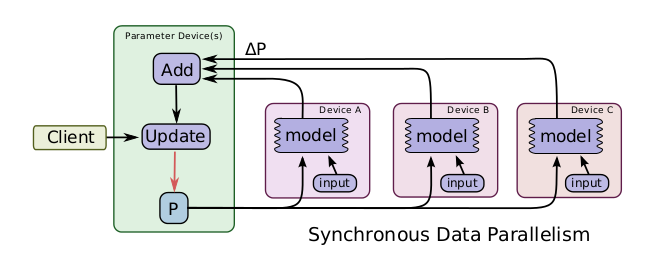

瓦砾由于最近bert-large用的比较多，踩了很多分布式训练的坑，加上在TensorFlow和PyTorch之间更换，算是熟悉了一下各类框架的分布式训练接口，由于集中在一起讲可能比较乱，笔者准备分三到四篇来讲一下深度学习的分布式训练。这一篇先讲一下“分布式训练的类型与算法”。
分布式训练的需求和重要性不需要多说，随着GPT、BERT、xlnet这些预训练模型的出现，普通的16G的显存已经不足以支撑深度学习模型训练的要求了，这时候就需要用到分布式训练来提高效率。
注意：这个系列主要介绍单机多卡的分布式训练情况（这种情况比较常见，土豪和大佬们请忽略）。
总的来说，分布式训练分为这几类：
- 按照并行方式来分：模型并行 vs 数据并行
- 按照更新方式来分：同步更新 vs 异步更新
- 按照算法来分：Parameter Server算法 vs AllReduce算法
模型并行 vs 数据并行
假设我们有n张GPU：
- 模型并行：不同的GPU输入相同的数据，运行模型的不同部分，比如多层网络的不同层；
- 数据并行：不同的GPU输入不同的数据，运行相同的完整的模型。
当模型非常大，一张GPU已经存不下的时候，可以使用模型并行，把模型的不同部分交给不同的机器负责，但是这样会带来很大的通信开销，而且模型并行各个部分存在一定的依赖，规模伸缩性差。因此，通常一张可以放下一个模型的时候，会采用数据并行的方式，各部分独立，伸缩性好。
同步更新 vs 异步更新
对于数据并行来说，由于每个GPU负责一部分数据，那就涉及到如果更新参数的问题，分为同步更新和异步更新两种方式。
- 同步更新：每个batch所有GPU计算完成后，再统一计算新权值，然后所有GPU同步新值后，再进行下一轮计算。
- 异步更新：每个GPU计算完梯度后，无需等待其他更新，立即更新整体权值并同步。

同步更新有等待，速度取决于最慢的那个GPU；异步更新没有等待，但是涉及到更复杂的梯度过时，loss下降抖动大的问题。所以实践中，一般使用同步更新的方式。
Parameter Server算法 vs Ring AllReduce算法
这里讲一下常用的两种参数同步的算法：PS 和 Ring AllReduce。
假设有5张GPU：
- Parameter Server：GPU 0将数据分成五份分到各个卡上，每张卡负责自己的那一份mini-batch的训练，得到grad后，返回给GPU 0上做累积，得到更新的权重参数后，再分发给各个卡。
- Ring AllReduce：5张以环形相连，每张卡都有左手卡和右手卡，一个负责接收，一个负责发送，循环4次完成梯度累积，再循环4次做参数同步。分为Scatter Reduce和All Gather两个环节。

Parameter Server的思想其实有点类似于MapReduce，以上讲同步异步的时候，都是用的这种算法，但是它存在两个缺点：
- 每一轮的训练迭代都需要所有卡都将数据同步完做一次Reduce才算结束，并行的卡很多的时候，木桶效应就会很严重，计算效率低。
- 所有的GPU卡需要和Reducer进行数据、梯度和参数的通信，当模型较大或者数据较大的时候，通信开销很大。
假设有N个GPU，通信一次完整的参数所需时间为K，那么使用PS架构，花费的通信成本为：
所以我们亟需一种新的算法来提高深度学习模型训练的并行效率。
2017 年 Facebook 发布了《Accurate, large minibatch SGD: Training ImageNet in 1 hour 》验证了大数据并行的高效性，同年百度发表了《Bringing HPC techniques to deep learning 》，验证了全新的梯度同步和权值更新算法的可行性，并提出了一种利用带宽优化环解决通信问题的方法——Ring AllReduce。

Parameter Service最大的问题就是通信成本和GPU的数量线性相关。而Ring AllReduce的通信成本与GPU数量无关。Ring AllReduce分为两个步骤：Scatter Reduce和All Gather。
Scatter Reduce过程：首先，我们将参数分为N份，相邻的GPU传递不同的参数，在传递N-1次之后，可以得到每一份参数的累积（在不同的GPU上）。
All Gather：得到每一份参数的累积之后，再做一次传递，同步到所有的GPU上。
根据这两个过程，我们可以计算到All Reduce的通信成本为：
可以看到通信成本T与GPU数量无关。
由于All Reduce算法在通信成本上的优势，现在几个框架基本上都实现了其对于的官方API，后面几篇，瓦砾会跟大家一起过一遍TF，Torch的分布式训练API具体是怎么用的，有哪些坑。